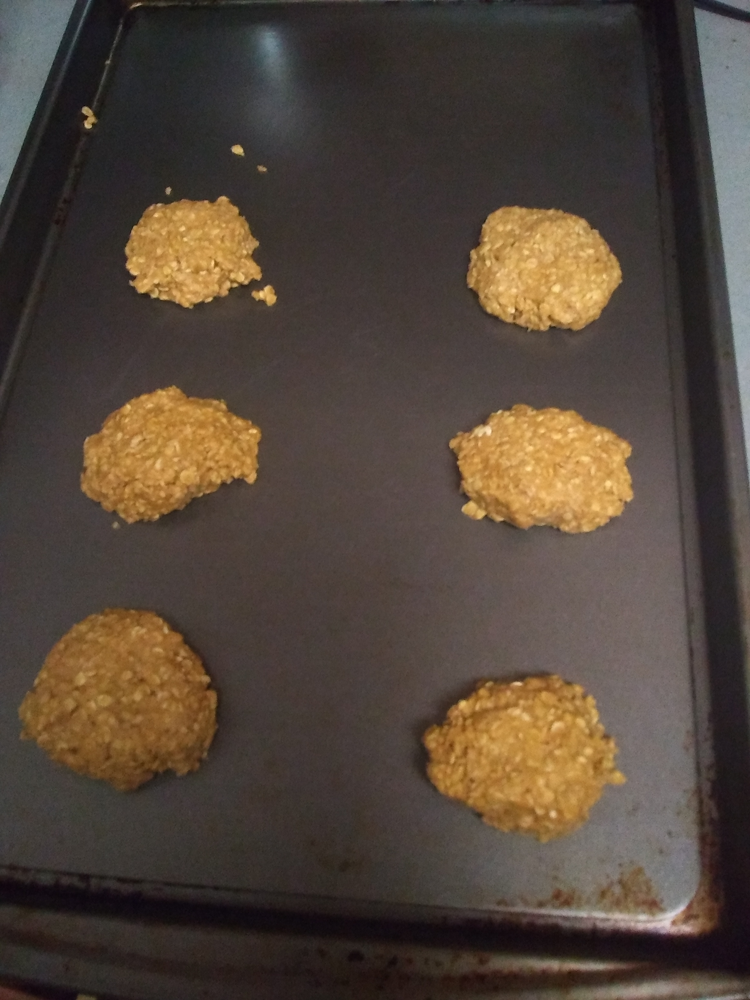
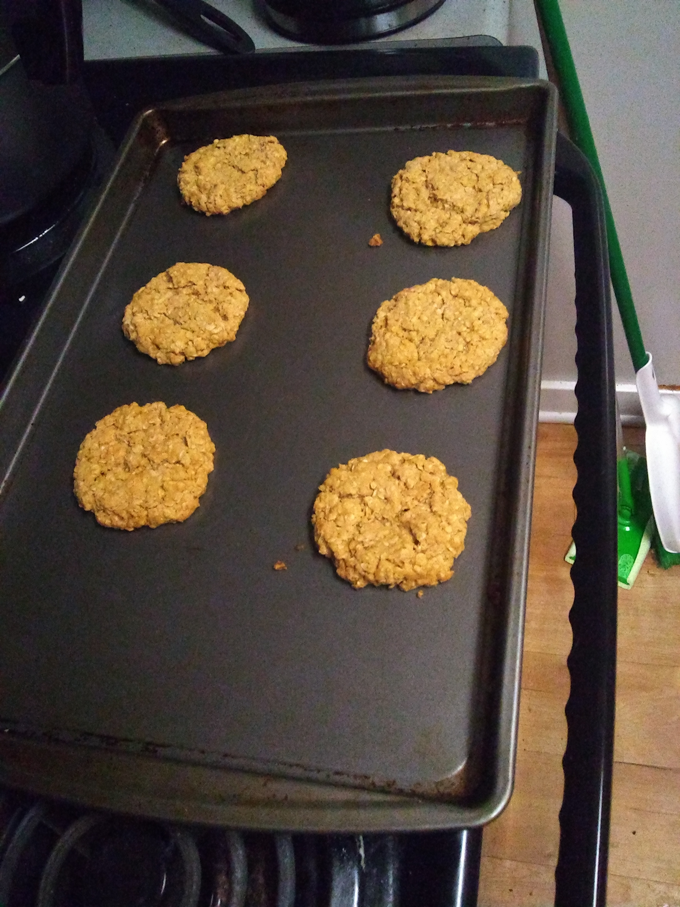

Vinegar Oatmeal Cookies

Ingredients
Wet Ingredients
- 1 Tbsp white vinegar
- 1/2 Cup melted butter
- 1/2 Cup brown sugar
- 1/4 Cup granulated sugar
Dry Ingredients
- 1 1/2 Tsp baking soda
- 1 1/2 Cup oatmeal
- 3/4 Cup flour
- 1 Pinch salt

Instructions
- Preheat oven to 350F
- Mix the wet ingredients in a bowl until well blended.
- Add in oatmeal, flour, and salt, mix until a soft dough forms. (Dough will be slightly crumbly)
- Add baking soda, and knead into dough until completely absorbed.
- Make twelve equally-sized balls of dough and place them on a cookie tray and bake for 10 to 15 minutes, or until edges are golden and centers are soft.